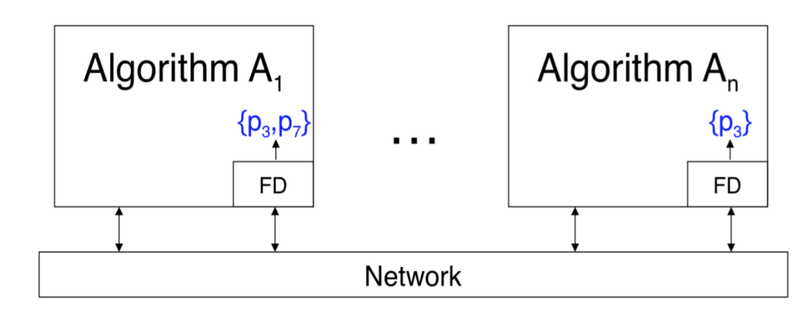

Failure detector
The Consensu Problem, within an asynchonous system, needs a Failure Detection system, that understands if a process failed, or if it was simply slower than usual to reply.
In this project was included an angorithm that allows to understand whether and what process is not working. This algorithm makes the system partially synchronous. The Failure Detector (FD) is an internal module contained in each process, that will be called periodically and will return to the process the list of suspected processes.

FD will update the list of suspected processed after a time T. T value is really small, so that the precision of the list is comparable to run-time.
During the execution, each process broadcasts a messagge to the other precesses to notify its activity. If a process don’t send any notification before a fixed timeout, it will be considered suspected and added to the suspected list. The timeout time is equal to “T+D”:
- T execution time
- D maximum time registered for a message exchange
This algorithm is called “eventually perfect falilure detector”. It’s based on a timeout and it ensures a Strong completeness and an eventual strong accuracy. When there is a partial synchrony, the system is asynchornous at the beginning, but after a time t it becames synchornous. Each process p holds a timeout for any other process within the system and sets it following the rule described above. To calculate the time passed until then, the process holds an internal clock.
The algorithm pseudo-code uses the following variables:
- Outputp : the suspected list, every process that executes the algorithm has its own local list. rappresenta la
- q: loope variable to indentify the processes
- ∏: the set of processes
- ∆: is the timeout of p process for the process q
Task 1:
Every process p periodically sends a message “p-is-alive” to any other process. This step can be considered a sort of “hert-beat” from a process to the others to notify its existance.
Task 2:
If a process p doesn’t receive a message “q-is-alive” from a q process belonging to the system, within the interval set by its clock, it will add q to the suspected list (if not already there).
Task 3:
When a process receives a message froma process that used to be suspected, it will update the list by deleting the process and increasing the related timeout. The following sequence diagram shows how the algorithm works in a system with 3 processes. The first process sends its heart-beat to the other processes. Processes 2 and 3 get the message and don’t add process 1 to the suspected list.
RIFARE SCHEMA A PAGINA 8